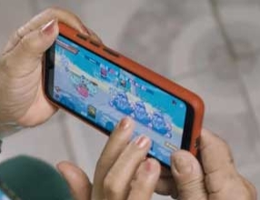

-
The top 5 NFT gamesAugust 18, 2021NFT Guy

The NFT games on this post use technology in a unique way, but they also have something in common. Every game is centered on acquiring some kind of resource from the game’s environment. The size of collected stuff varies per game and kind, and it is mostly up to the players to choose which world best suits them. Read more
-
NFT gaming’s growth in the PhilippinesSeptember 01, 2021NFT Guy
The “play-to-earn” movement is a growing trend in gaming, in which players in NFT games earn prizes that can be converted to real money. NFT game Axie Infinity has become extremely popular in the Philippines, where the jobless rate continues to vary. The Philippines accounted for 29,000 of the game’s 70,000 downloads in April. Read more